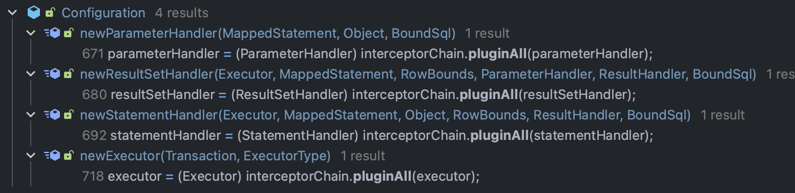

MyBatis 插件
插件的加载
mybatis
org.apache.ibatis.builder.xml.XMLConfigBuilder#parseConfiguration
private void parseConfiguration(XNode root) {
try {
// ignore
pluginElement(root.evalNode("plugins"));
// ignore
} catch (Exception e) {
throw new BuilderException("Error parsing SQL Mapper Configuration. Cause: " + e, e);
}
}mybatis-spring-boot-starter
org.mybatis.spring.SqlSessionFactoryBean#buildSqlSessionFactory
protected SqlSessionFactory buildSqlSessionFactory() throws Exception {
// ignore
if (!isEmpty(this.plugins)) {
Stream.of(this.plugins).forEach(plugin -> {
targetConfiguration.addInterceptor(plugin);
LOGGER.debug(() -> "Registered plugin: '" + plugin + "'");
});
}
// ignore
return this.sqlSessionFactoryBuilder.build(targetConfiguration);
}插件的执行

org.apache.ibatis.plugin.InterceptorChain#pluginAll
public Object pluginAll(Object target) {
// 循环应用插件，加载顺序 1->2->3 ，执行顺序 3->2->1->x->1->2->3
for (Interceptor interceptor : interceptors) {
// 责任链
target = interceptor.plugin(target);
}
// 返回最终代理对象
return target;
}可以拦截的方法
-
Executor (update, query, flushStatements, commit, rollback, getTransaction, close, isClosed)
-
ParameterHandler (getParameterObject, setParameters)
-
ResultSetHandler (handleResultSets, handleOutputParameters)
-
ResultSetHandler(handleResultSets，handleOutputParameters)
-
StatementHandler (prepare, parameterize, batch, update, query)
实现方式
实现 Interceptor 接口。
org.apache.ibatis.plugin.Interceptor
public interface Interceptor {
// 拦截逻辑
Object intercept(Invocation invocation) throws Throwable;
// 触发逻辑
default Object plugin(Object target) {
return Plugin.wrap(target, this);
}
// 初始化逻辑
default void setProperties(Properties properties) {
}
}添加 Intercepts 注释
org.apache.ibatis.plugin.Intercepts
@Documented
@Retention(RetentionPolicy.RUNTIME)
@Target(ElementType.TYPE)
public @interface Intercepts {
/**
* 返回要截取的方法签名。
*/
Signature[] value();
}org.apache.ibatis.plugin.Signature
@Documented
@Retention(RetentionPolicy.RUNTIME)
@Target({})
public @interface Signature {
/**
* 切入类
*/
Class<?> type();
/**
* 切入方法
*/
String method();
/**
* 切入方法的参数
*/
Class<?>[] args();
}Example
@Intercepts({
@Signature(type = Executor.class, method = "query", args = {MappedStatement.class, Object.class, RowBounds.class, ResultHandler.class}),
@Signature(type = Executor.class, method = "query", args = {MappedStatement.class, Object.class, RowBounds.class, ResultHandler.class, CacheKey.class, BoundSql.class}),
@Signature(type = Executor.class, method = "update", args = {MappedStatement.class, Object.class})
})
public class DemoPlugin implements Interceptor {
@Override
public Object intercept(Invocation invocation) throws Throwable {
}
@Override
public Object plugin(Object target) {
return Plugin.wrap(target, this);
}
@Override
public void setProperties(Properties properties) {
}
}